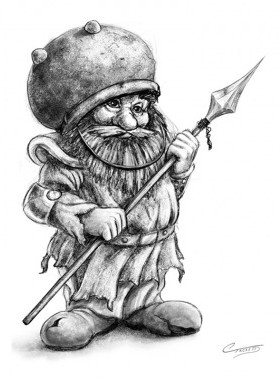

Aghar (Lağım Cüceleri) - Aghar, ya da Lağım Cüceleri Krynn ırkları arasındaki en pasaklı ırk olarak sayılmaktadır. Lağım cüceleri, gerçek cücelerin uzaktan akrabaları olmasına karşın, Thorbardin'deki Asilzadeler Konseyi'nde bir sözcüleri vardır. Liderleri, Yücebulp, diğerlerine en çok yağ çeken Aghar'dır. Herhangi bir tehdit karşısında ne yapacaklarını bilemeden kaçan Lağım Cüceleri, kalın kafalı ve aptaldırlar (bütün üç lağım cücesi kabilesinde sadece Bupu –Rastlin Majere'in büyülediği arkadaşı– ve Raf –Tika Waylan Majere'in, Son Yuva Hanı'ndaki yardımcısı– üçe kadar saymayı becerebilmektedir).
